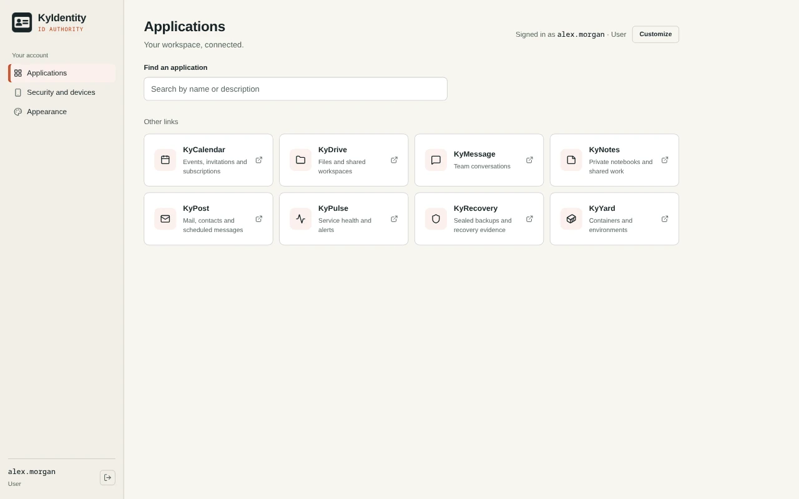

Manage people and apps
Invite users, organize groups, and assign access to applications. An app launcher gives people a place to find their connected tools.
KyIdentity / Accounts & access
A shared home for your organization’s accounts and app access. Run your own identity provider and let connected applications use the same sign-in.
Open source (MIT) · Self-hostedScreenshots
Example screens from local builds with fictional data. Appearance varies by version.

Inside KyIdentity
Invite users, organize groups, and assign access to applications. An app launcher gives people a place to find their connected tools.
Use authenticator codes, passkeys, or push approval in KyAuth. Set MFA policy per group or per app. Recovery codes help people regain access when a factor is lost.
OpenID Connect provides shared sign-in, with back-channel logout. SCIM works both ways: push accounts and groups to your apps, or let an upstream directory own accounts here.
How it fits together
KyAuth generates local authenticator codes without a KyIdentity server. Pair it with KyIdentity for push MFA. Android and iOS also support sign-on to compatible apps; Linux sign-on is not implemented. Android supports Firebase or UnifiedPush, iOS uses Apple Push, and Linux delivery depends on the phone platform.
Android has signed release APKs. iOS and Linux have source-build instructions; store availability and physical-device qualification differ by platform. Follow the Android, iOS or Linux guide. Keep each site’s recovery codes separately: KyAuth has no TOTP backup, export or sync.
For administrators
Assign people directly or through groups, map application roles, and preview effective access. Each connected application still needs to enforce the permissions it receives.
Manage invitations, password resets and account deactivation. Configure email delivery for mailed invitations and self-service resets; without it, an administrator hands over activation links.
Search recorded events by actor, action, time and outcome, and export filtered records. An alerts page surfaces privilege changes, recovery use and connector problems.
Delegate with Helpdesk, Auditor and App owner roles instead of handing out full administrator access.
Grant access with an expiry date, set account end dates, and let people request access through an approval flow.
Deactivation revokes KyIdentity sessions and drives configured downstream offboarding. Receiving apps must enforce the updates; offline tokens and application sessions have their own limits. Verify sign-out and access loss in each connected app.
Running your own identity service
Use HTTPS and choose the service address before enrolling devices and connecting applications. Changes to the identity service’s address can affect existing integrations and passkeys.
Protect the database and deployment keys, plan administrator recovery, and follow the project’s backup and restore instructions. KyRecovery integration supports sealed backups.
Register application callback addresses exactly. Account revocation and sign-out also depend on the receiving app’s token and session handling; a launcher link alone does not secure that app.
The operator manages accounts, authentication factors, app connections and audit records, and is responsible for access, updates and retention. Connected apps receive identity information according to their configured scopes and roles.
Read the Busnes.app privacy policy. For data held by an independently operated KyIdentity installation, contact its operator.
Next step
Start with the server setup guide, then review the integration requirements for your application.